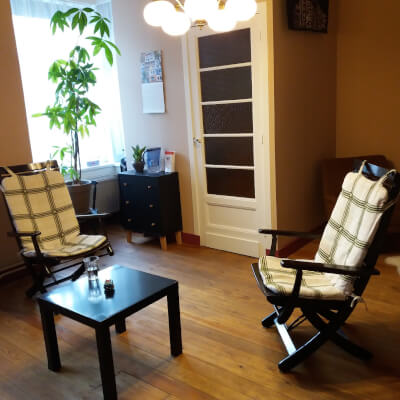

Over Mezelf
Als kind was ik graag bezig met vreemde talen leren. Ik koos een talenstudie na de middelbare school. Maar… er kriebelde iets tijdens de zoektocht naar mijn weg in het leven. Talenkennis was voor mij geen eindpunt, maar slechts een manier om gemakkelijker contact te maken met de ander. Mijn nieuwsgierigheid naar de ander, naar wat mensen drijft in hun doen en laten, was groot. Ik studeerde Maatschappelijk werk aan de Sociale Hogeschool te Heverlee. In 1997 ging ik aan de slag als maatschappelijk assistent en werkte oa met mensen in precaire verblijfssituaties, kans- en generatiearmen, trauma-slachtoffers,... Na 23 jaar werken met mensen blijven de vele waardevolle ontmoetingen mij raken. Ik volgde een 4-jarige opleiding Gestalttherapie en blijf mij verder verdiepen in therapeutische methodieken, zoals Duplo-popjes (uit de contextuele hulpverlening), creatieve therapie, voice-dialogue, sofrologie, mindfulness, yoga, biodanza, somatic experiencing, ... Persoonlijke ontwikkeling hoort bij mijn zoektocht in het leven. In 2015 volgde ik een jaartraining rond de begeleiding van slachtoffers van seksueel misbruik. In 2016-2017 volgde ik een jaaropleiding Partnerrelatietherapie bij de School voor Relatietherapie. Sedert 2018 volg ik de opleiding 'Voeding en vitaliteit', waarin ik mij verdiep in het effect van voedsel op onze vitaliteit en onze emoties. In 2019 werd ik opgeleid tot SCHIP-behandelaar.
Als vrijwilliger ben ik actief bij Femma Kleur-rijk, een vereniging voor vrouwen in ‘gemengde’ relaties en hun kinderen. Daarnaast werkte ik 2 jaar als vrijwillig therapeute bij Dokters van de Wereld. Dit is een NGO waar mensen in precaire situaties terecht kunnen voor levensnoodzakelijke medische en psychische ondersteuning.
Als therapeut en als mens heb ik ervaring met veranderingen in het leven én met de ontmoeting met de ander of het andere. Met de worsteling en de pijn die dit soms teweeg brengt. Maar ook met de persoonlijke groei die het allemaal kan opleveren.
quote...
